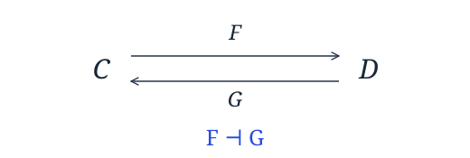

I want to spend some more time talking about Kan extensions, composition of Kan extensions, and the relationship between a monad and the monad generated by a monad.
But first, I want to take a moment to recall adjunctions and show how they relate to some standard (co)monads, before tying them back to Kan extensions.
Adjunctions 101
An adjunction between categories and consists of a pair of functors , and and a natural isomorphism:
We call the left adjoint functor, and the right adjoint functor and an adjoint pair, and write this relationship as
Borrowing a Haskell definition from Dave Menendez, an adjunction from the category of Haskell types (Hask) to Hask given by a pair of Haskell Functor instances can be defined as follows, where phi is witnessed by = leftAdjunct and = rightAdjunct. [haddock]
class (Functor f, Functor g) =>
Adjunction f g | f -> g, g -> f where
unit :: a -> g (f a)
counit :: f (g a) -> a
leftAdjunct :: (f a -> b) -> a -> g b
rightAdjunct :: (a -> g b) -> f a -> b
unit = leftAdjunct id
counit = rightAdjunct id
leftAdjunct f = fmap f . unit
rightAdjunct f = counit . fmap f

Currying and Uncurrying
The most well known adjunction to a Haskell programmer is between the functors given by ((,)e) and ((->)e). (Recall that you can read ((,)e) as (e,) and ((->)e) as (e->); however, the latter syntax isn't valid Haskell as you aren't allowed to make (,) and (->) sections. We use this adjunction most every day in the form of the functions curry and uncurry.
curry :: ((a, b) -> c) -> a -> b -> c
curry f x y = f (x,y)
uncurry :: (a -> b -> c) -> (a, b) -> c
uncurry f ~(x,y) = f x y
However the arguments are unfortunately slightly flipped around when we go to define this as an adjunction.
instance Adjunction ((,)e) ((->)e) where
leftAdjunct f a e = f (e,a)
rightAdjunct f ~(e,a) = f a e
This adjunction defines the relationship between the anonymous reader monad and the anonymous reader comonad (aka the product comonad).
All Readers are the Same
As an aside, if you look at the reader arrow, reader monad and reader comonad all side by side you can see that they are all basically the same thing. Kleisli arrows for the anonymous reader monad have the form a -> e -> b. The Reader arrow takes the form arr (a, e) b, which when arr is (->) this reads as (a,e) -> b, which is just a curried Kleisli arrow for the Reader monad. On the other hand the reader comonad is ((,)e), and its CoKleisli arrows have the form (e,a) -> b. So, putting these side by side:
a -> e -> b
(a , e) -> b
(e , a) -> b
You can clearly see these are all the same thing!
State and Composing Adjunctions
Once we define functor composition:
newtype O f g a = Compose { decompose :: f (g a) }
instance (Functor f, Functor g) => Functor (f `O` g) where
fmap f = Compose . fmap (fmap f) . decompose
We can see that every adjunction gives rise to a monad:
instance Adjunction f g => Monad (g `O` f) where
return = Compose . unit
m >>= f =
Compose . fmap (rightAdjunct (decompose . f)) $ decompose m
and if you happen to have a Comonad typeclass lying around, a comonad:
class Comonad w where
extract :: w a -> a
duplicate :: w a -> w (w a)
extend :: (w a -> b) -> w a -> w b
extend f = fmap f . duplicate
duplicate = extend id
instance Adjunction f g => Comonad (f `O` g) where
extract = counit . decompose
extend f =
Compose . fmap (leftAdjunct (f . Compose)) . decompose
In reality, adjunction composition is of course not the only way you could form a monad by composition, so in practice a single composition constructor leads to ambiguity. Hence why in category-extras there is a base CompF functor, and specialized variations for different desired instances. For simplicity, I'll stick to `O` here.
We can compose adjunctions, yielding an adjunction, so long as we are careful to place things in the right order:
instance (Adjunction f1 g1, Adjunction f2 g2) =>
Adjunction (f2 `O` f1) (g1 `O` g2) where
counit =
counit . fmap (counit . fmap decompose) . decompose
unit =
Compose . fmap (fmap Compose . unit) . unit
In fact, if we use the adjunction defined above, we can see that its just the State monad!
instance MonadState e ((->)e `O` (,)e) where
get = compose $ \s -> (s,s)
put s = compose $ const (s,())
Not that I'd be prone to consider using that representation, but we can also see that we get the context comonad this way:
class Comonad w =>
ComonadContext s w | w -> s where
getC :: w a -> s
modifyC :: (s -> s) -> w a -> a
instance ComonadContext e ((,)e `O` (->)e) where
getC = fst . decompose
modifyC f = uncurry (flip id . f) . decompose
Adjunctions as Kan Extensions
Unsurprisingly, since pretty much all of category theory comes around to being an observation about Kan extensions in the end, we can find some laws relating left- and right- Kan extensions to adjunctions.
Recall the definitions for right and left Kan extensions over Hask:
newtype Ran g h a = Ran
{ runRan :: forall b. (a -> g b) -> h b }
data Lan g h a = forall b. Lan (g b -> a) (h b)
Formally, if and only if the right Kan extension exists and is preserved by . (Saunders Mac Lane, Categories for the Working Mathematician p248). We can use this in Haskell to define a natural isomorphism between f and Ran g Identity witnessed by adjointToRan and ranToAdjoint below:
adjointToRan :: Adjunction f g => f a -> Ran g Identity a
adjointToRan f = Ran (\a -> Identity $ rightAdjunct a f)
ranToAdjoint :: Adjunction f g => Ran g Identity a -> f a
ranToAdjoint r = runIdentity (runRan r unit)
We can construct a similar natural isomorphism for the right adjoint g of a Functor f and Lan f Identity:
adjointToLan :: Adjunction f g => g a -> Lan f Identity a
adjointToLan = Lan counit . Identity
lanToAdjoint :: Adjunction f g => Lan f Identity a -> g a
lanToAdjoint (Lan f v) = leftAdjunct f (runIdentity v)
So, with that in hand we can see that Ran f Identity -| f -| Lan f Identity, presuming Ran f Identity and Lan f Identity exist.
A More General Connection
Now, the first isomorphism above can be seen as a special case of a more general law relating functor composition and Kan extensions, where h = Identity in the composition below:
ranToComposedAdjoint
:: Adjunction f g
=> Ran g h a -> (h `O` f) a
ranToComposedAdjoint r = Compose (runRan r unit)
composedAdjointToRan
:: (Functor h, Adjunction f g)
=> (h `O` f) a -> Ran g h a
composedAdjointToRan f =
Ran (\a -> fmap (rightAdjunct a) (decompose f))
Similarly, we get the more general relationship for Lan:
lanToComposedAdjoint
:: (Functor h, Adjunction f g)
=> Lan f h a -> (h `O` g) a
lanToComposedAdjoint (Lan f v) =
Compose (fmap (leftAdjunct f) v)
composedAdjointToLan
:: Adjunction f g
=> (h `O` g) a -> Lan f h a
composedAdjointToLan = Lan counit . decompose
Composing Kan Extensions
Using the above with the laws for composing right Kan extensions:
composeRan :: Ran f (Ran g h) a -> Ran (f `O` g) h a
composeRan r =
Ran (\f -> runRan (runRan r (decompose . f)) id)
decomposeRan
:: Functor f
=> Ran (f `O` g) h a -> Ran f (Ran g h) a
decomposeRan r =
Ran (\f -> Ran (\g -> runRan r (Compose . fmap g . f)))
or the laws for composing left Kan extensions:
composeLan
:: Functor f
=> Lan f (Lan g h) a -> Lan (f `O` g) h a
composeLan (Lan f (Lan g h)) =
Lan (f . fmap g . decompose) h
decomposeLan :: Lan (f `O` g) h a -> Lan f (Lan g h) a
decomposeLan (Lan f h) = Lan (f . compose) (Lan id h)
can give you a lot of ways to construct monads:
Right Kan Extension as (almost) a Monad Transformer
You can lift many of operations from a monad m to the codensity monad of m. Unfortunately, we don't have quite the right type signature for an instance of MonadTrans, so we'll have to make do with our own methods:
[Edit: this has been since factored out into Control.Monad.Codensity to allow Codensity to actually be an instance of MonadTrans]
liftRan :: Monad m => m a -> Ran m m a
liftRan m = Ran (m >>=)
lowerRan :: Monad m => Ran m m a -> m a
lowerRan a = runRan a return
instance MonadReader r m =>
MonadReader r (Ran m m) where
ask = liftRan ask
local f m = Ran (\c -> ask >>=
\r -> local f (runRan m (local (const r) . c)))
instance MonadIO m =>
MonadIO (Ran m m) where
liftIO = liftRan . liftIO
instance MonadState s m =>
MonadState s (Ran m m) where
get = liftRan get
put = liftRan . put
In fact the list of things you can lift is pretty much the same as what you can lift over the ContT monad transformer due to the similarity in the types. However, just because you lifted the operation into the right or left Kan extension, doesn't mean that it has the same asymptotic performance.
Similarly we can lift many comonadic operations to the Density comonad of a comonad using Lan.
[Edit: Refactored out into Control.Comonad.Density]
Changing Representation
Given a f -| g, g `O` f is a monad, and Ran (g `O` f) (g `O` f) is the monad generated by (g `O` f), described in the previous post. We showed above that this monad can do many of the same things that the original monad could do. From there you can decomposeRan to get Ran g (Ran f (g `O` f)), which you can show to be yet another monad, and you can continue on from there.
Each of these monads may have different operational characteristics and performance tradeoffs. For instance the codensity monad of a monad can offer better asymptotic performance in some usage scenarios.
Similarly the left Kan extension can be used to manipulate the representation of a comonad.
All of this code is encapsulated in category-extras [docs] [darcs] as of release 0.51.0
From the original discussion
Selected questions, explanations, and corrections. Original wording and dates; spam and automated trackbacks omitted.
Update: The current version of category-extras on hackage should now build correctly on ghc 6.8.